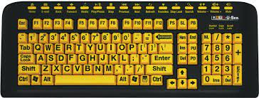
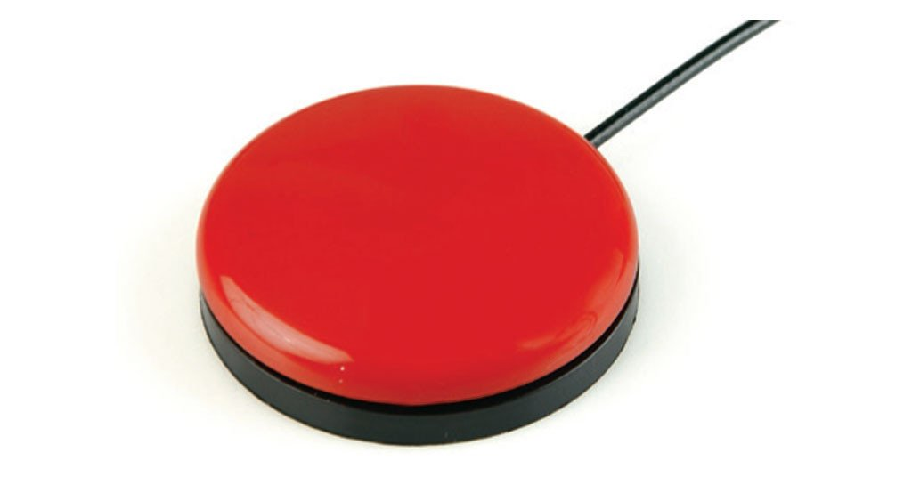
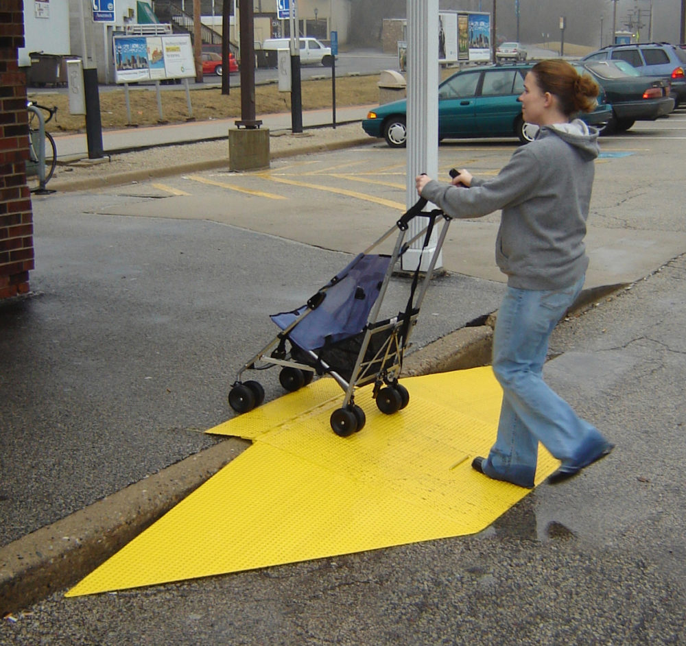

Introduction to Accessibility
This is the website for my Frontend Masters class on Accessibility.
You can find the codebase for it here.
About Me

Hello. My name is Jon Kuperman. I've been a software engineer for the last 12 years. I spent most of my career doing web development with a focus on accessibility and web performance.
What is Accessibility
When websites and web tools are properly designed and coded, people with disabilities can use them. However, currently many sites and tools are developed with accessibility barriers that make them difficult or impossible for some people to use. Making the web accessible benefits individuals, businesses, and society.
Similar Fields
- Web Performance
- Internationalization
- UI Design
Web accessibility means that people with disabilities can use the Web.
More specifically, Web accessibility means that people with disabilities can perceive, understand, navigate, and interact with the Web, and that they can contribute to the Web.
Some Statistics
- 26 percent (one in 4) of adults in the United States have some type of disability.
- 2 in 5 adults age 65 years and older have a disability
- 20 percent of people in the US (48 million people) report some degree of hearing loss, and 29 million of them could benefit from using hearing aids.
- 2.3 percent of people in the US (7 million people) report having a visual disability, and 1 million people in the US are legally blind.
- 16 percent of people in the US (39 million people) have difficulties with their physical functioning. 17.1 million people would find it very difficult or impossible to walk unassisted for a quarter mile.
- Roughly 8 million people in the US have an intellectual disability, including 425,000 children.
Types of disabilities
- Mobility and physical
- Cognitive and neurological
- Visual
- Hearing
The web is already accessible (even if your website is not)
For example, let's check out The first website . It's very easy to use with assistive technologies.
Reasons developers should learn accessibility
- It's fun!
- We're the ones making it inaccessible
- Human Rights
- Legal Issue
- Reach a larger audience
- Impactful
- Makes you a specialist
Amazing ways people use the web
Keyboard Only
Head Wand
Mouth Stick
Single Switch
Screen Reader
Curb cut effect
The Curb-Cut Effect, in its essence, asserts that an investment in one group can cascade out and up and be a substantial investment in the broader well-being of a nation -- one whose policies and practices create an equitable economy, a healthy community of opportunity, and just society.
Accessibility Standards
Web Content Accessibility Guidelines (WCAG)
WCAG specifies three different conformance levels they are:- A (lowest)
- AA (mid range)
- and AAA (highest)
Level A sets a minimum level of accessibility and does not achieve broad accessibility for many situations. For this reason, UC recommends AA conformance for all Web-based information.
WebAIM
WebAIM provides a handy checklist with their recommendations.
WebAIM specifies that accessible websites should be:
- Perceivable
- Operable
- Understandable
- Robust